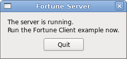

Local Fortune Server Example
Demonstrates using QLocalServer and QLocalSocket for serving a simple local service.
The Local Fortune Server example shows how to create a server for a simple local service. It is intended to be run alongside the Local Fortune Client Example
